Radial symmetry
This algorithm finds the sub-pixel position of a molecule by determining the point with maximal radial symmetry in the data as described in [1]. The general idea is to find the origin of radial symmetry (i.e., the center of a molecule) as the point with the minimum distance to gradient-oriented lines passing through all data points. The calculation of each molecular position is very fast due to an analytical solution, but the algorithm does not estimate the intensity or imaged size of a molecule. Radial symmetry is a robust feature in SMLM data, making the algorithm resistant to noise.
The calculation starts by determining the intensity co-gradient
| 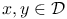 |
for every integer point  from the set .
Here
from the set .
Here  coordinates are rotated by 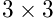 from the
coordinates are rotated by 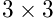 from the  coordinate system of the image, because partial derivatives are determined
using the Roberts cross operator [2] as
coordinate system of the image, because partial derivatives are determined
using the Roberts cross operator [2] as
| 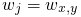 | ||||
| 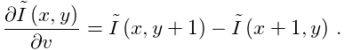 | 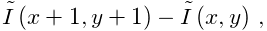 |
The computed co-gradient 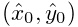 corresponds to the
point 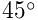 and the slope of a gradient-oriented
line passing through the point 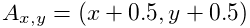 is, in a  coordinate
system, given by
coordinate
system, given by
| 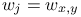 |
The origin of the radial symmetry 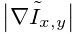 can be determined as the point that minimizes the sum of weighed distances of all considered lines to that point. It can be shown [1] that the problem has an analytical solution. For simplicity, let index 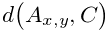, where 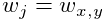, thus 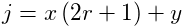, 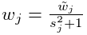, and . The analytical solution is given by the following equations
| 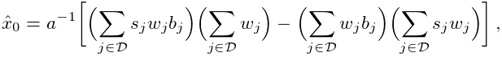 | 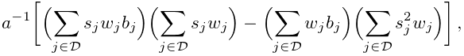 | |||
| 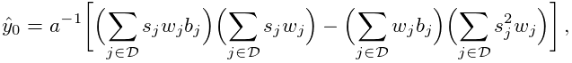 | 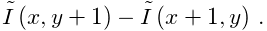 |
where 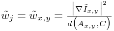, 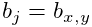, and . The point-to-line distances are weighted by the factor 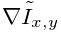, where 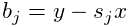 is the Euclidean distance of point to the centroid 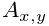. The centroid is computed analogously to centroid estimator but from the gradient magnitudes .
The implementation of the radial symmetry method is taken from [1], where the partial derivatives are additionally smoothed by a 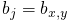 averaging filter in order to reduce noise and improve the accuracy of the results.
References
- [1] (2012) Rapid, accurate particle tracking by calculation of radial symmetry centers. Nature Methods 9 (7), pp. 724–6. External Links: Document Cited by: Radial symmetry, Radial symmetry, Radial symmetry.
- [2] (2007) Image Processing, Analysis, and Machine Vision. 3rd edition edition, Cengage Learning. Cited by: Radial symmetry.
![[LOGO]]()